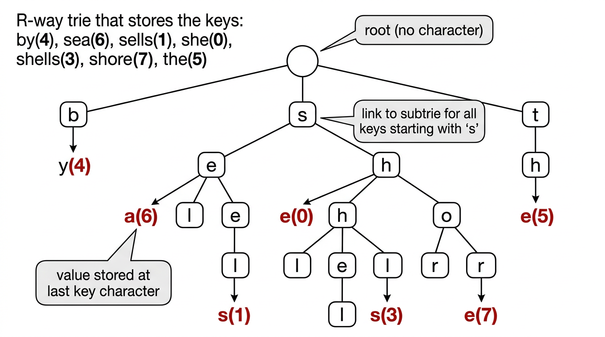
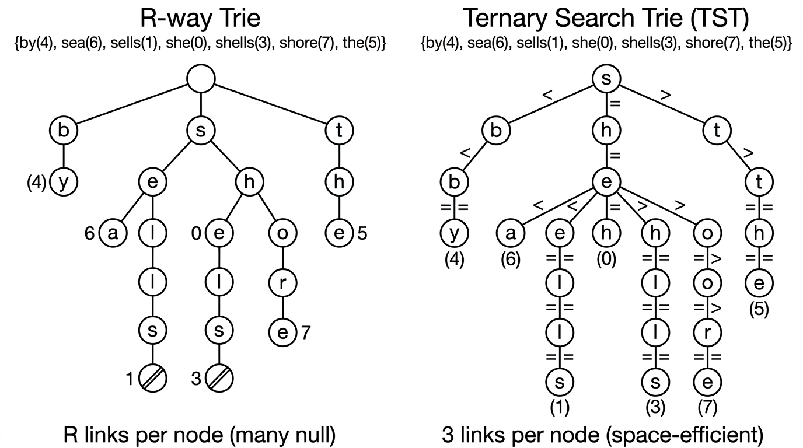

Tries & String Search — COMP0005 Algorithms¶
Lecture-style notes. Tries are tree-shaped symbol tables where each node represents a single character, not a whole key. R-way tries offer fast lookup but waste space; ternary search tries (TSTs) fix the space problem while keeping sublinear search-miss times. Both support an extended API with prefix matching and sorted iteration that hash tables cannot provide.
1. COMPLETE TOPIC SUMMARIES¶
R-way tries¶
Structure. A trie (from "retrieval") is a tree in which:
- The root has no character; every other node stores one character.
- Each node has an array of \(R\) child links (one per alphabet character).
- A node may also hold a value; a key's value is stored in the node reached by following the key's characters from the root.
- Characters and keys are implicit: a character is determined by the link index used to reach a node, and a key is the concatenation of characters on the path from the root.

{kind=link}
Search.
- Start at the root.
- Follow the child link for the next character of the key.
- Search hit: reach the node corresponding to the last character and its value is non-null — return the value.
- Search miss: reach a null link before exhausting the key, or reach the last-character node but its value is null — return null.
Insert.
- Follow links for each character, creating new nodes for any null links encountered.
- At the node for the last character, set (or update) the value.
Pseudocode:
class TrieST:
class Node:
def __init__(self):
self.value = None
self.children = [None] * R
def __init__(self):
self.root = self.Node()
def get(self, key):
node = self._get(self.root, key, 0)
return None if node is None else node.value
def _get(self, node, key, d):
if node is None:
return None
if d == len(key):
return node
return self._get(node.children[ord(key[d])], key, d + 1)
def put(self, key, value):
self.root = self._put(self.root, key, value, 0)
def _put(self, node, key, value, d):
if node is None:
node = self.Node()
if d == len(key):
node.value = value
return node
c = ord(key[d])
node.children[c] = self._put(node.children[c], key, value, d + 1)
return node
Performance:
| Operation | Cost |
|---|---|
| Search hit | \(O(L)\) where \(L\) = key length (examine all characters) |
| Search miss | \(O(L)\) worst case, but typically sublinear (few characters before hitting null) |
| Insert | \(O(L)\) |
| Space per node | \(R\) links (many null) |
Space problem. Each leaf has \(R\) null links. For large alphabets (e.g. Unicode, \(R = 65\,536\)), this is prohibitive even when few keys share prefixes.
Ternary search tries (TSTs / 3-way tries)¶
Key idea. Replace the \(R\)-way branching array with a 3-way comparison at each node:
- Left child: keys whose current character is less than the node's character.
- Middle child: keys whose current character equals the node's character (advance to the next character).
- Right child: keys whose current character is greater than the node's character.
Each node stores: a character, a value (may be null), and three child pointers (left, mid, right).

{kind=link}
Search.
- Compare the current key character with the node's character.
- If less, go left (same character position).
- If greater, go right (same character position).
- If equal, go to the middle child and advance to the next character.
- Hit/miss conditions are the same as R-way tries.
Insert. Same traversal logic; create nodes as needed; set value at the terminal node.
Pseudocode:
class TST:
class Node:
def __init__(self):
self.char = None
self.value = None
self.left = self.mid = self.right = None
def __init__(self):
self.root = None
def get(self, key):
node = self._get(self.root, key, 0)
return None if node is None else node.value
def _get(self, node, key, d):
if node is None:
return None
c = key[d]
if c < node.char:
return self._get(node.left, key, d)
elif c > node.char:
return self._get(node.right, key, d)
elif d < len(key) - 1:
return self._get(node.mid, key, d + 1)
else:
return node
def put(self, key, value):
self.root = self._put(self.root, key, value, 0)
def _put(self, node, key, value, d):
c = key[d]
if node is None:
node = self.Node()
node.char = c
if c < node.char:
node.left = self._put(node.left, key, value, d)
elif c > node.char:
node.right = self._put(node.right, key, value, d)
elif d < len(key) - 1:
node.mid = self._put(node.mid, key, value, d + 1)
else:
node.value = value
return node
Performance comparison:
| R-way trie | TST | |
|---|---|---|
| Links per node | \(R\) (many null) | 3 (left, mid, right) |
| Total links | \(\sim R \cdot N\) (worst) | \(\sim 4N\) |
| Search hit | \(O(L)\) | \(O(L + \ln N)\) |
| Search miss | Sublinear | Sublinear |
| Space | Wasteful for large \(R\) | Space-efficient |
TSTs are as fast as hashing for string keys and faster on search misses, while also supporting the extended ordered API below.
Extended trie API¶
Tries (both R-way and TST) support operations that hash tables cannot:
| Operation | Description |
|---|---|
keys() |
Return all keys in sorted order |
keysWithPrefix(s) |
Return all keys that start with prefix s |
longestPrefixOf(s) |
Return the longest key that is a prefix of s |
keys() — sorted iteration.
Perform an in-order traversal of the trie, maintaining the current prefix as a string. Whenever a node with a non-null value is reached, enqueue the current prefix.
def keys(self):
queue = []
self._collect(self.root, "", queue)
return queue
def _collect(self, node, prefix, queue):
if node is None:
return
if node.value is not None:
queue.append(prefix)
for c in range(R):
if node.children[c] is not None:
self._collect(node.children[c], prefix + chr(c), queue)
keysWithPrefix(s) — prefix match.
Navigate to the node \(x\) corresponding to prefix s (using _get), then _collect from \(x\) using s as the starting prefix.
def keysWithPrefix(self, s):
queue = []
x = self._get(self.root, s, 0)
self._collect(x, s, queue)
return queue
Applications: autocomplete (user types a prefix, system returns all matching keys), IP routing (longest prefix match for packet forwarding).
Symbol table implementation comparison¶
| Implementation | Search hit | Insert | Ordered ops | Space |
|---|---|---|---|---|
| Red-black BST | \(c \lg N\) | \(c \lg N\) | Yes | moderate |
| Hash table | \(O(1)\) avg | \(O(1)\) avg | No | moderate |
| R-way trie | \(O(L)\) | \(O(L)\) | Yes | \(R\) links/node |
| TST | \(O(L + \ln N)\) | \(O(L + \ln N)\) | Yes | 3 links/node |
Tries win when keys are strings and you need prefix-based queries or sorted iteration. Hash tables win when you only need get/put and don't care about ordering.
2. EXAM-STYLE QUESTIONS (WITH MODEL ANSWERS)¶
Q1 — R-way trie search trace¶
Question. Draw an R-way trie (alphabet {a, b, c}) containing keys "ab" (value 1), "ac" (value 2), "b" (value 3). Trace get("ac") and get("abc").
Model answer. The trie has root → child 'a' → children 'b' (value 1) and 'c' (value 2); root also has child 'b' (value 3).
get("ac"): root → 'a' (follow link for 'a') → 'c' (follow link for 'c') → value = 2. Hit.
get("abc"): root → 'a' → 'b' → follow link for 'c' → null link. Miss.
Q2 — TST vs R-way trie space¶
Question. Explain why a TST is more space-efficient than an R-way trie for large alphabets.
Model answer. In an R-way trie, every node allocates an array of \(R\) child pointers, most of which are null. For \(R = 256\), even a leaf wastes 255 null pointers. A TST node has only 3 pointers (left, mid, right). The total number of links is \(\sim 4N\) (including the value pointer) regardless of alphabet size, compared to up to \(R \cdot N\) for an R-way trie.
Q3 — keysWithPrefix implementation¶
Question. Explain how keysWithPrefix("sh") works on a trie containing {by, sea, sells, she, shells, shore, the}.
Model answer. First, follow links for 's' then 'h' to reach the subtrie rooted at the 'h' node under 's'. Then perform an in-order collect from that node, prepending "sh" as the prefix. The traversal visits 'e' (value for "she" found), then 'e' → 'l' → 'l' → 's' (value for "shells"), then 'o' → 'r' → 'e' (value for "shore"). Result: ["she", "shells", "shore"].
Q4 — Why hash tables can't do prefix queries¶
Question. Why can't a hash table efficiently support keysWithPrefix?
Model answer. A hash function scatters keys uniformly across buckets — keys sharing a common prefix are not stored near each other. To find all keys with a given prefix, you would have to examine every entry in the table (\(O(N)\)), because there is no structural relationship between a key's prefix and its bucket location. Tries, by contrast, store keys that share a prefix in the same subtree, so prefix queries only traverse the relevant part of the tree.